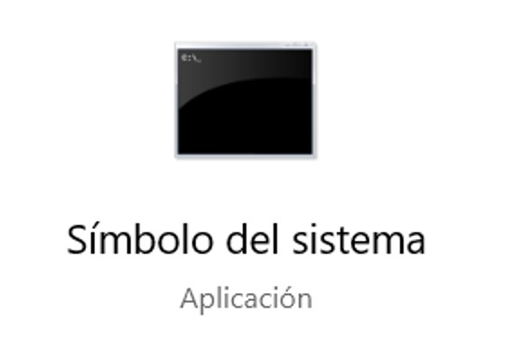
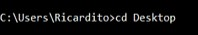
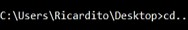
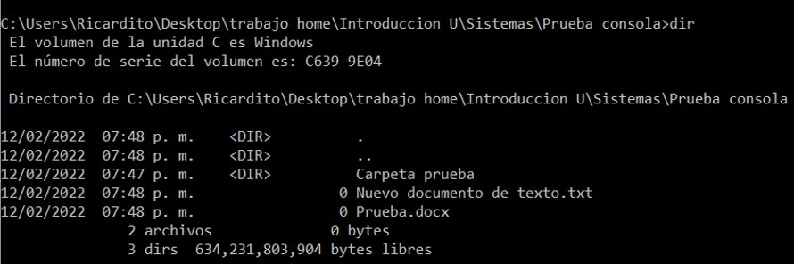
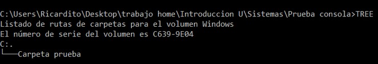
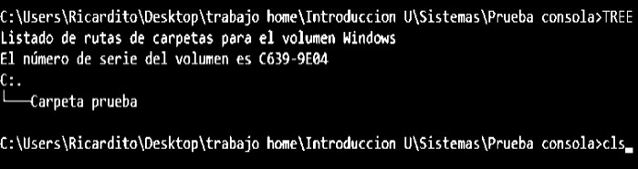
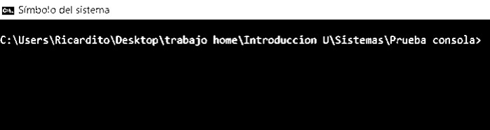
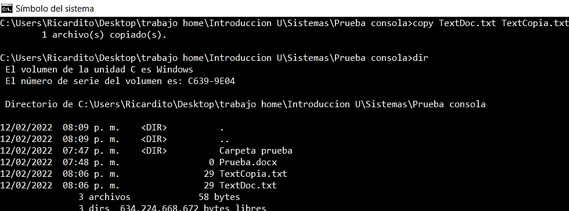
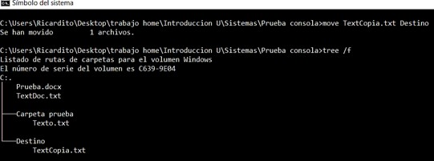

La consola de Windows es la aplicación utilizada en sistemas basados en NT para ejecutar comando MS-DOS (.exe de 16bits) entre otros script. En este lugar se nos permite manipular funciones del sistema operativo (con ciertos limites al ser cerrado) pudiendo prácticamente usar la computadora desde la consola. Esta también muestra aspectos que el sistema operativo administra, como la ip de la computadora, dispositivos en la red, procesos en curso entre otras cosas. Nosotros podemos acceder a estas acciones con diversos comandos, que veremos a continuación.

Comandos Basicos
Cd/cd..
Este comando en consola sirve para acceder a un directorio que este en el directorio actual y salir de ese.


dir
Sirve para ver todos los archivos y subcarpetas que están en la carpeta actual.

Tree
Sirve para ver las carpetas y las subcarpetas que están en esas carpetas en una especie de esquema

Cls
Sirve para limpiar la consola de todos lo comando ejecutados.


Copy
Este comando copia literalmente un documento y su contenido, pudiendo hasta cambiar su tipo (.txt,.docx)

Move
Este sirve para mover archivos de un directorio a otro, también puede renombrar.

Del/rd
Estos dos sirven para borrar, solo que Del borra toda un carpeta y rd una carpeta vacia.